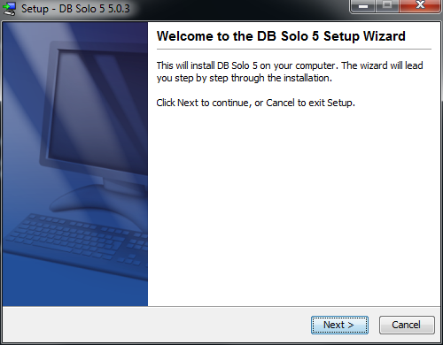
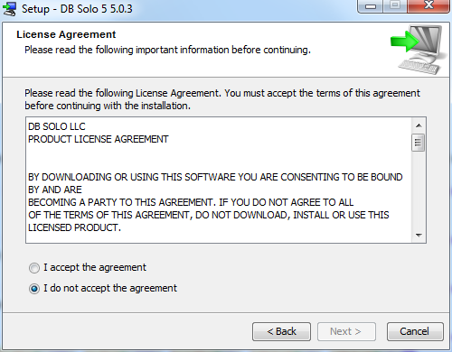
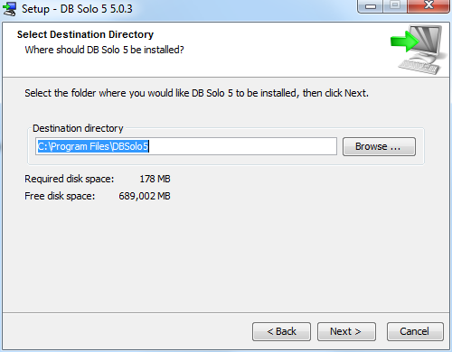
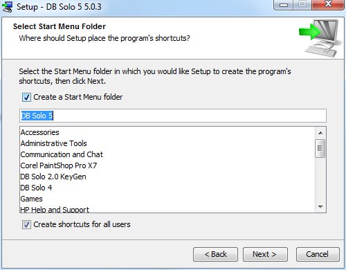
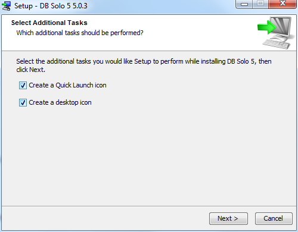
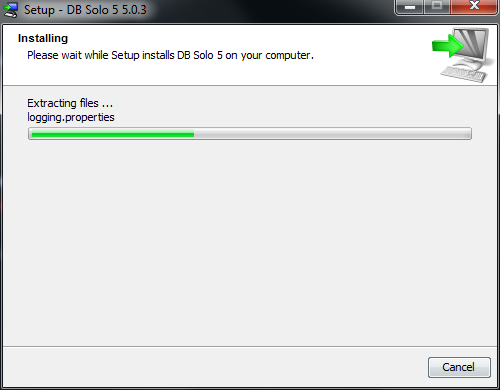
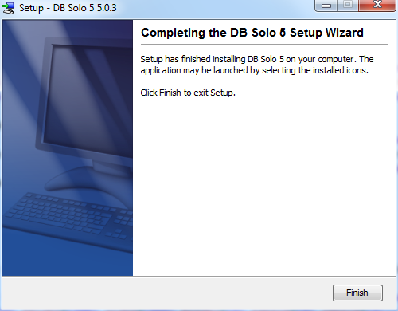

Overview
DB Solo - The SQL Query Tool is a powerful yet affordable cross-platform database development and management tool for both developers and administrators. DB Solo supports all major relational database products available today:
- Oracle 8.1.7 and later
- Sybase ASE 12.5 and later
- Sybase SQL Anywhere 9 and later
- MySQL 3.23 and later
- Vertica 6.0 and later
- MS SQL Server 2000 and later
- DB2 LUW 8.x and later
- HSQLDB 2.0 and later
- SQLite 3.x
- solidDB (formerly Solid EmbeddedEngine and Solid BoostEngine)
- PostgreSQL 7.3 and later
- Cassandra 2.0 and later
DB Solo comes bundled with JDBC drivers for Oracle, MySQL, Sybase ASE, Cassandra, Sybase SQL Anywhere, DB2, PostgreSQL, SQLite and Microsoft SQL Server. For other vendors you will have to download the appropriate driver from the vendor's website.
DB Solo runs on multiple operating system platforms:
DB Solo supports Japanese, Korean, Chinese, and other UTF-8 character sets in all of its windows allowing you to view and edit Asian character set-based data in your database.
Upgrade and Installation
Downloading and Configuring DB Solo software
Below is the procedure for installing DB Solo for the first time or upgrading to a new version. Please read all the text within the wizard's screens.
1. Download the .exe file into a designated directory.2. Execute the .exe file by double clicking on it or running it from the command line.3. The Introduction screen, displayed below, will start the installation process.
Figure - Introduction
4. Choosing Next will take you to the License information screen, displayed below.
Figure - License information
5. Please read licensing screen carefully before continuing. Choosing Next will take you to the Choose Install Folder screen, displayed below.
Figure - Choose Install Folder
6. The above screen allows you to choose the installation location. You can change the default location of by typing in a new directory path or browse to a directory.7. Choosing Next will take you to Select Start Menu Folder screen, displayed below.
Figure - Select Start Menu Folder
8. The above screen allows you to choose the name of the Start Menu folder in which the DB Solo shortcuts will be created.9. Choosing Next will take you to the Installer Additional Tasks screen, displayed below.

Figure - Installer Additional Tasks
10. The Installer Additional Tasks allows you to optionally create a desktop icon and/or Quick Launch icon for DB Solo.11. Choosing Next will proceed with the installation.Installing the software
The Installing DB Solo screen, shown below, is displayed during the installation. Progress bar indicates the level of completion.

Figure - Installing DB Solo
When the installation is complete, the Install Complete screen will be displayed as shown below.

Figure - Install Complete
Choose Finish to complete the installation.
Back to Index DB Solo
www.dbsolo.com
support@dbsolo.com